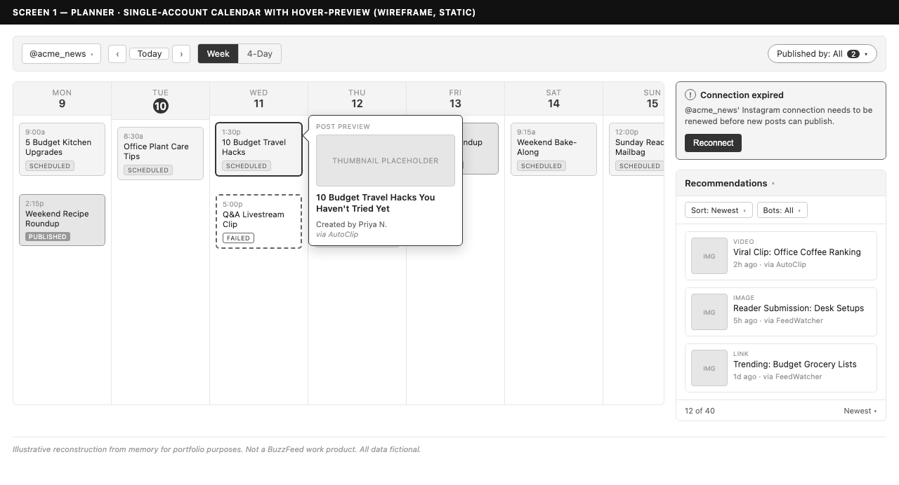
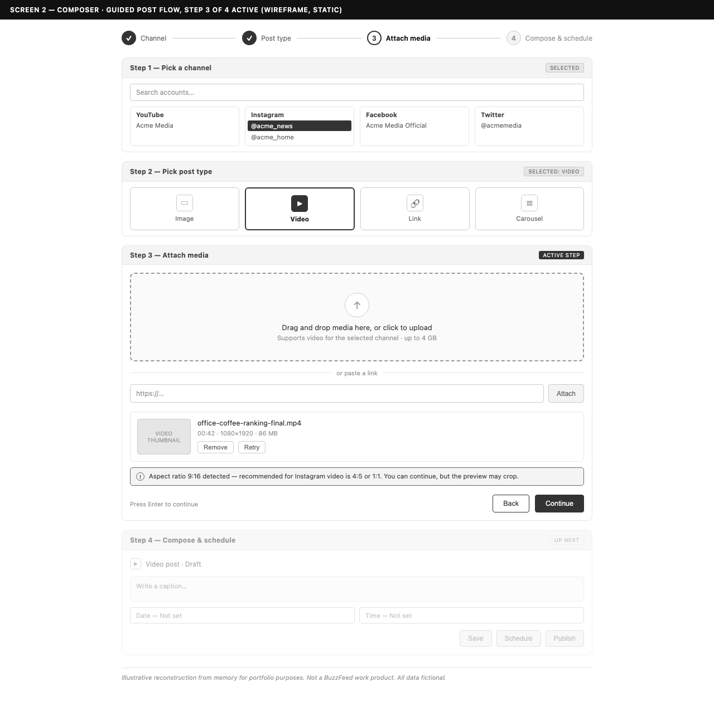
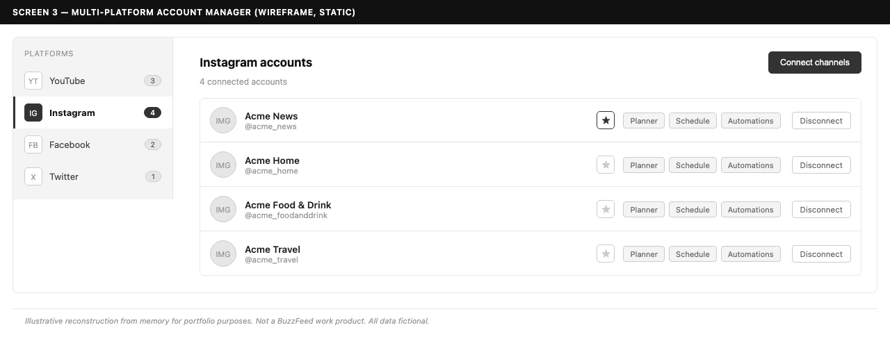

Owned the frontend for 8+ years: the internal platform a major media company's social team used to publish across six networks.



Owned the frontend for 8+ years: the internal platform a major media company's social team used to publish across six networks.
I owned the frontend of the social team's publishing platform for 8+ years as its domain expert. I built it layer by layer as a React application spanning 15 post types across six platforms: a guided composer, a mixed-media carousel composer, and self-service account-management tools.
The platform is a React application that connects to six social networks and handles 15 post types through guided composers. Beyond the core product I built a publishing SDK and a Chrome extension, and led the cross-brand rollout of a custom-built link-in-bio service.
The platform kept a small team publishing at network scale.